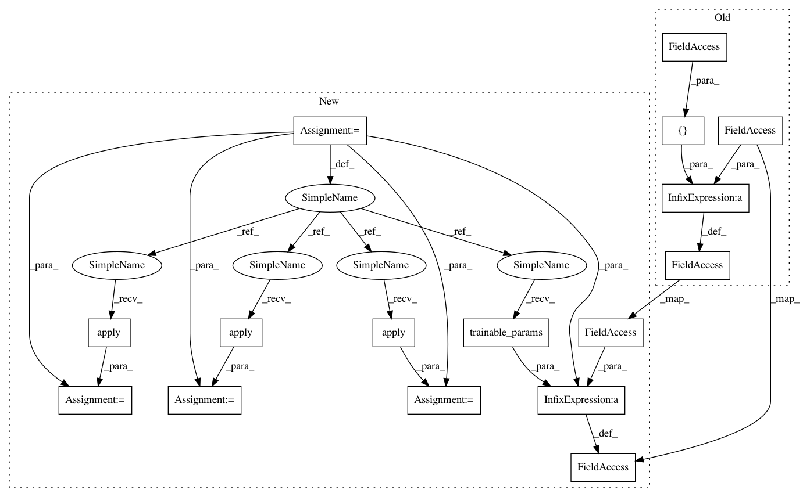

d317e22332d549184116872b5f6ea8066c66fa2f,deepmedic/neuralnet/layers.py,ConvLayer,_processInputWithBnNonLinearityDropoutPooling,#ConvLayer#Any#Any#Any#Any#Any#Any#Any#Any#,176
Before Change
inputToNonLinearityTrain,
inputToNonLinearityVal,
inputToNonLinearityTest) = makeBiasParamsAndApplyToFms(inputToLayerTrain, inputToLayerVal, inputToLayerTest)
self._params = self._params + [self._b]
//--------------------------------------------------------
//------------ Apply Activation/ non-linearity -----------
//--------------------------------------------------------
After Change
else : //Not using batch normalization
//make the bias terms and apply them. Like the old days before BN"s own learnt bias terms.
bias_layer = BiasLayer(inputToLayerTrain.shape[1])
inputToNonLinearityTrain = bias_layer.apply(inputToLayerTrain)
inputToNonLinearityVal = bias_layer.apply(inputToLayerVal)
inputToNonLinearityTest = bias_layer.apply(inputToLayerTest)
self._params = self._params + bias_layer.trainable_params()
//--------------------------------------------------------
//------------ Apply Activation/ non-linearity -----------
In pattern: SUPERPATTERN
Frequency: 3
Non-data size: 16
Instances
Project Name: Kamnitsask/deepmedic
Commit Name: d317e22332d549184116872b5f6ea8066c66fa2f
Time: 2020-01-07
Author: konstantinos.kamnitsas12@imperial.ac.uk
File Name: deepmedic/neuralnet/layers.py
Class Name: ConvLayer
Method Name: _processInputWithBnNonLinearityDropoutPooling
Project Name: Kamnitsask/deepmedic
Commit Name: d317e22332d549184116872b5f6ea8066c66fa2f
Time: 2020-01-07
Author: konstantinos.kamnitsas12@imperial.ac.uk
File Name: deepmedic/neuralnet/layers.py
Class Name: SoftmaxLayer
Method Name: makeLayer
Project Name: Kamnitsask/deepmedic
Commit Name: c86f490ec902331f9e64824f1fc9395c5b3f2cad
Time: 2020-01-07
Author: konstantinos.kamnitsas12@imperial.ac.uk
File Name: deepmedic/neuralnet/layers.py
Class Name: ConvLayer
Method Name: _processInputWithBnNonLinearityDropoutPooling
Project Name: Kamnitsask/deepmedic
Commit Name: d317e22332d549184116872b5f6ea8066c66fa2f
Time: 2020-01-07
Author: konstantinos.kamnitsas12@imperial.ac.uk
File Name: deepmedic/neuralnet/layers.py
Class Name: ConvLayer
Method Name: _processInputWithBnNonLinearityDropoutPooling